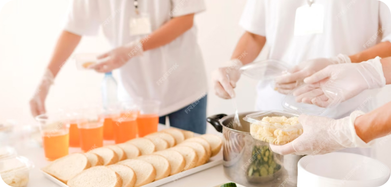
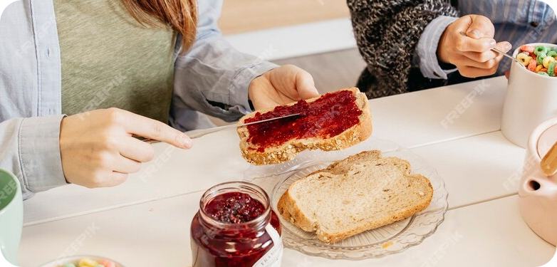
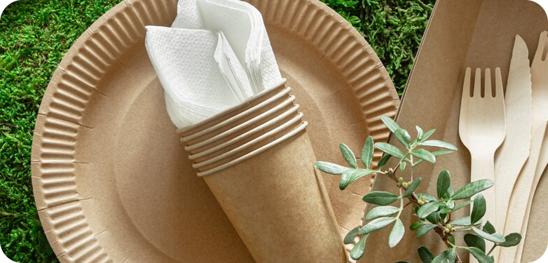

Our Blog
This article, we'll explore essential tips and strategies for creating an exceptional breakfast catering experience. From menu planning to presentation and accommodating dietary needs, discover how to delight your guests with a delicious morning spread.
1. Transition to the use of biodegradable tableware and packaging to reduce the negative impact on the environment.
2. The practice of sourcing products locally to help support the local community and reduce our carbon footprint.
3. Implement a recycling program to sort and dispose of waste at events.
4. Application of inventory management technologies to optimize product purchases and reduce surplus.
5. Organize meals and portions to minimize leftovers and prevent excess.
6. Develop menus with seasonal produce and ingredients to promote sustainable use of resources.
7. Interactive Food Stations: Introduce interactive food stations where attendees can customize their meals or interact with chefs. This adds an element of excitement and engagement to the dining experience, fostering networking opportunities among guests.
8. Opt for Sustainable Practices: Choose suppliers and vendors who prioritize sustainable practices and source ingredients responsibly. Incorporating sustainable food options into your menu demonstrates your commitment to environmental stewardship and corporate social responsibility.
9. Provide Ample Beverage Options: Alongside the food menu, ensure there is a variety of beverage options available, including alcoholic and non-alcoholic choices. Consider incorporating signature cocktails or mocktails that tie into the event theme.
10. Test and Taste: Before the event, conduct tastings and sample the proposed menu items to ensure quality and flavor consistency. Make any necessary adjustments based on feedback to ensure a memorable dining experience for attendees.